Manual de Usuario - Sistema Delfos
Bienvenido al manual de usuario del sistema Delfos. Este documento te guiará paso a paso para que puedas utilizar todas las funciones del sistema de forma eficiente. El sistema de ejemplo utilizado es el proyecto "Línea 2 del Metro de Lima y Callao".
1. Empezar
Bienvenida e Ingreso al Sistema
Para ingresar al sistema, necesitas tus credenciales proporcionadas por el administrador.
- Abre tu navegador y dirígete a la URL de acceso de Delfos.
- Ingresa tu Usuario y Contraseña.
- Haz clic en el botón Iniciar Sesión.
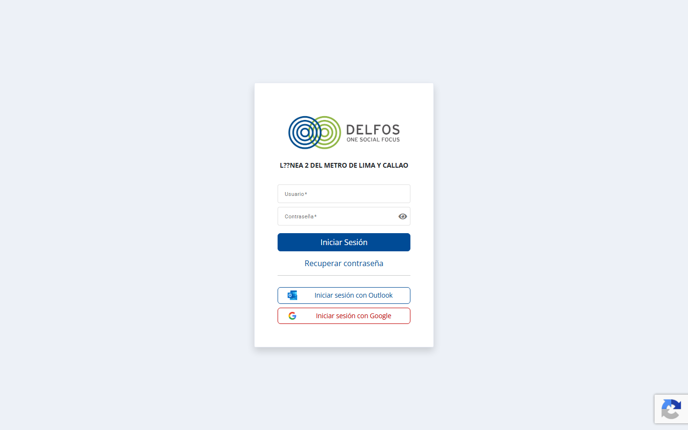
- Ingresa tu nombre de usuario.
- Ingresa tu contraseña y presiona "Iniciar Sesión".
Conceptos Clave
Antes de empezar a usar Delfos, familiarízate con estos términos importantes:
- Stakeholder: Es un grupo de interés, persona u organización que tiene relación con el proyecto (ej. vecinos, autoridades, instituciones).
- Relacionista: Es el miembro de tu equipo encargado de gestionar la comunicación con los stakeholders.
- Ficha: La pantalla principal de un stakeholder, que agrupa toda su historia (interacciones, reclamos, compromisos).
- Etiqueta / Tag: Categorías que puedes asignar para agrupar y filtrar la información fácilmente.
- Evaluación: Es la postura del stakeholder frente al proyecto (ej. a favor, neutral, en contra).
- Entregable: Es una acción específica o hito necesario para cumplir un compromiso adquirido.
2. Módulos del Sistema
El menú principal (barra lateral izquierda) te permite acceder a los distintos módulos de Delfos.
Inicio / Dashboard
¿Para qué sirve? Es tu panel de control principal. Aquí tienes una visión general del proyecto, con indicadores clave (KPIs) y tus actividades pendientes.
¿Qué puedes hacer aquí? Revisar de un vistazo cuántas tareas, reclamos o interacciones tienes pendientes por atender el día de hoy.
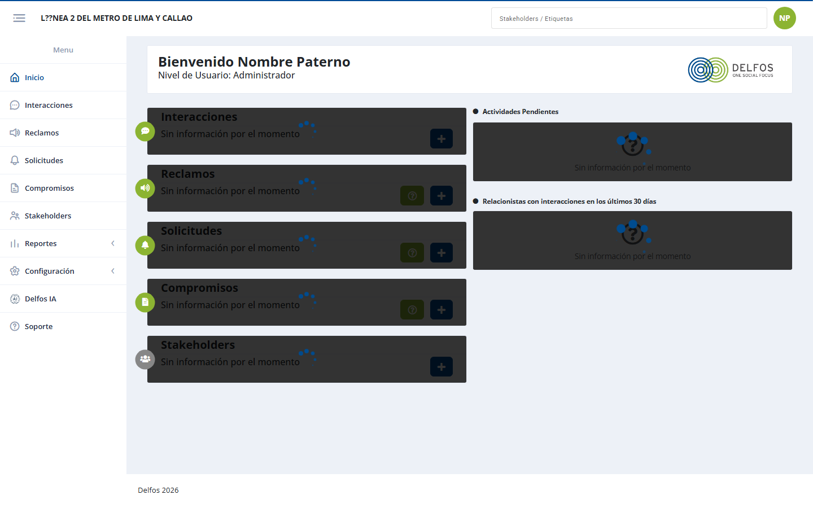
Stakeholders
¿Para qué sirve? Es el directorio central de todos los grupos de interés del proyecto.
¿Qué puedes hacer aquí? Buscar un stakeholder, registrar uno nuevo, exportar el directorio, o hacer clic en uno para ver su Ficha completa.
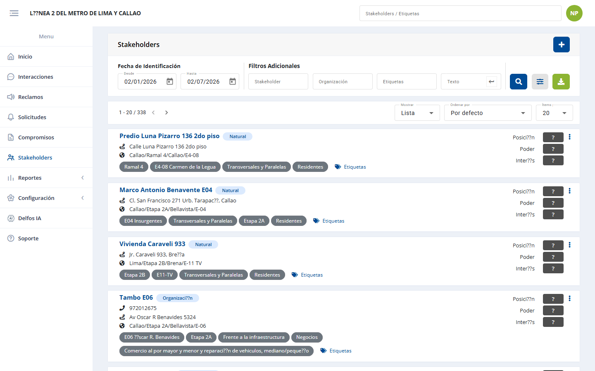
- Usar los botones de arriba a la derecha para Nuevo o Exportar.
- Hacer clic en un registro de la tabla para abrir la ficha del stakeholder.
Al ingresar a un stakeholder, verás su Ficha con diferentes pestañas:
- Interacción: Historial de reuniones, llamadas o contactos.
- Reclamos: Quejas formales asociadas a esta persona.
- Compromiso: Acuerdos a los que se ha llegado.
- Solicitudes: Pedidos o requerimientos específicos.
- Editar / Combinar: Para actualizar sus datos o fusionar registros duplicados.
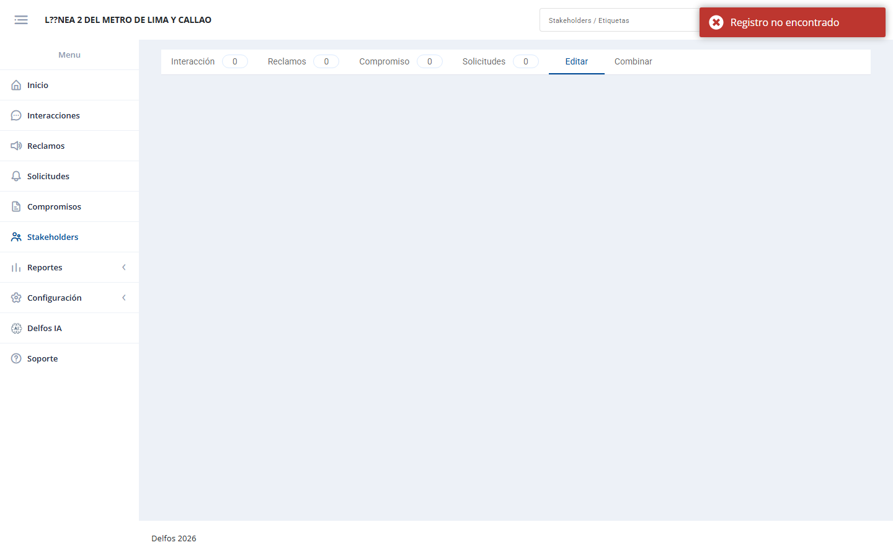
Interacciones
¿Para qué sirve? Es la bitácora de todo contacto (reunión, oficio, llamada) que tu equipo mantiene con cualquier stakeholder.
¿Qué puedes hacer aquí? Registrar nuevas interacciones y hacerles seguimiento, o buscar interacciones pasadas filtrando por fechas.
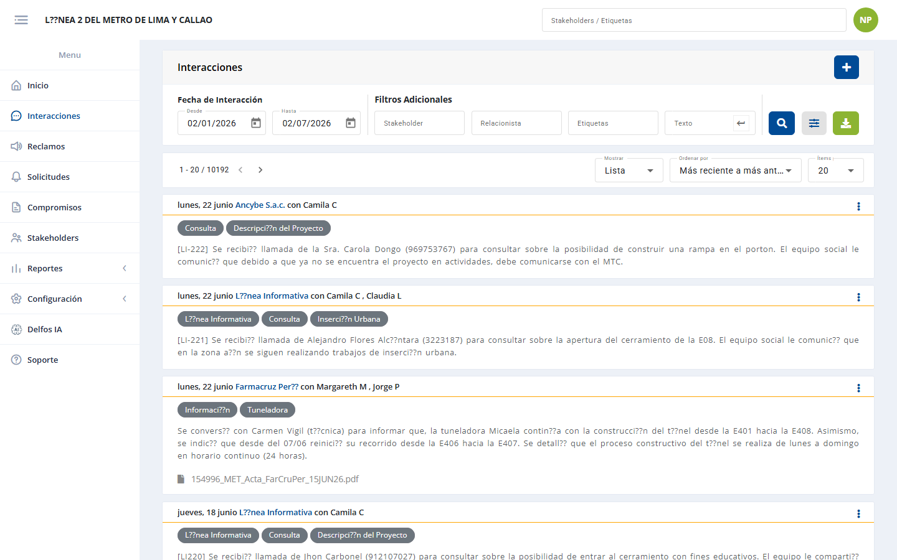
Reclamos
¿Para qué sirve? Para gestionar formalmente las quejas de los stakeholders. Cada reclamo recibe un código único (ej. C-XXXX).
¿Qué puedes hacer aquí? Registrar, evaluar, responder y dar cierre a los reclamos siguiendo el proceso oficial.
Flujo del Proceso de Reclamo:
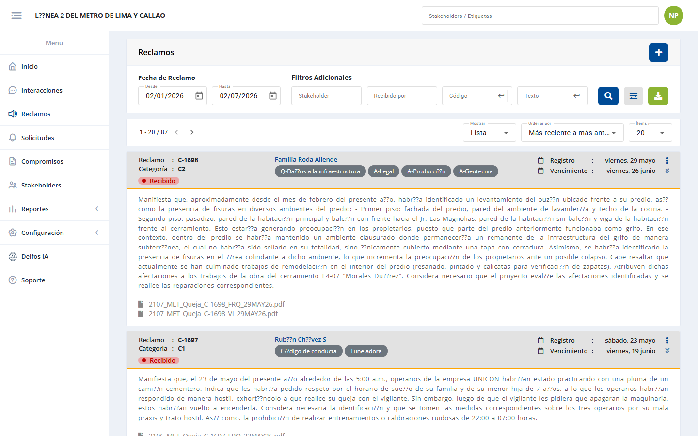
Solicitudes
¿Para qué sirve? Para hacer seguimiento a requerimientos o pedidos de los grupos de interés que no constituyen una queja formal ni un compromiso oficial.
¿Qué puedes hacer aquí? Documentar el requerimiento, asignarlo para atención y cerrarlo una vez resuelto.
Flujo del Proceso de Solicitud:
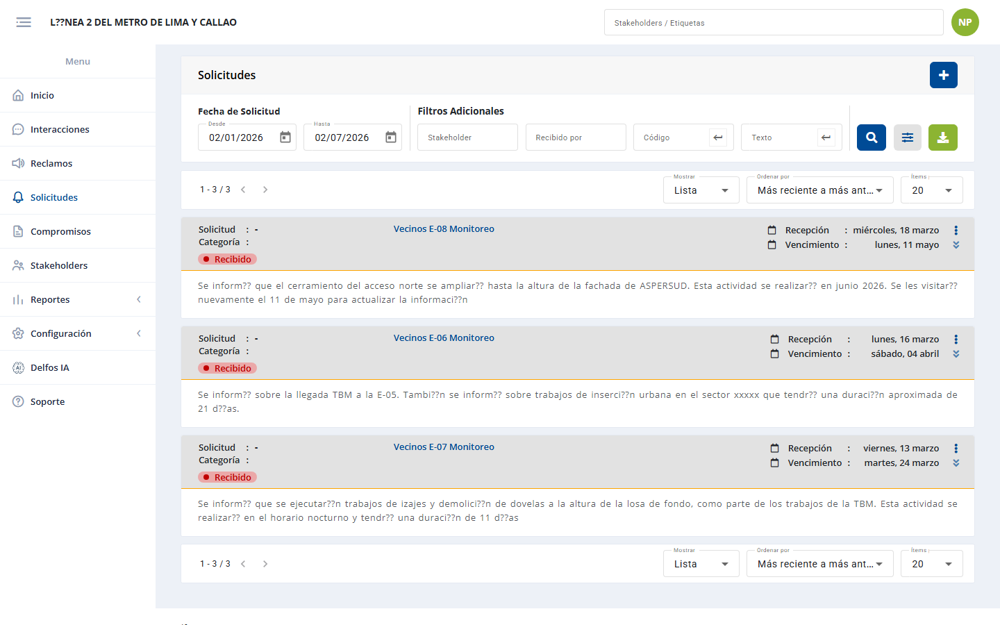
Compromisos
¿Para qué sirve? Administra los acuerdos formales asumidos con los stakeholders, asegurando su cumplimiento a través de entregables.
¿Qué puedes hacer aquí? Registrar un nuevo acuerdo, subdividirlo en entregables con fechas límite y adjuntar evidencia del cumplimiento.
Flujo del Proceso de Compromiso:
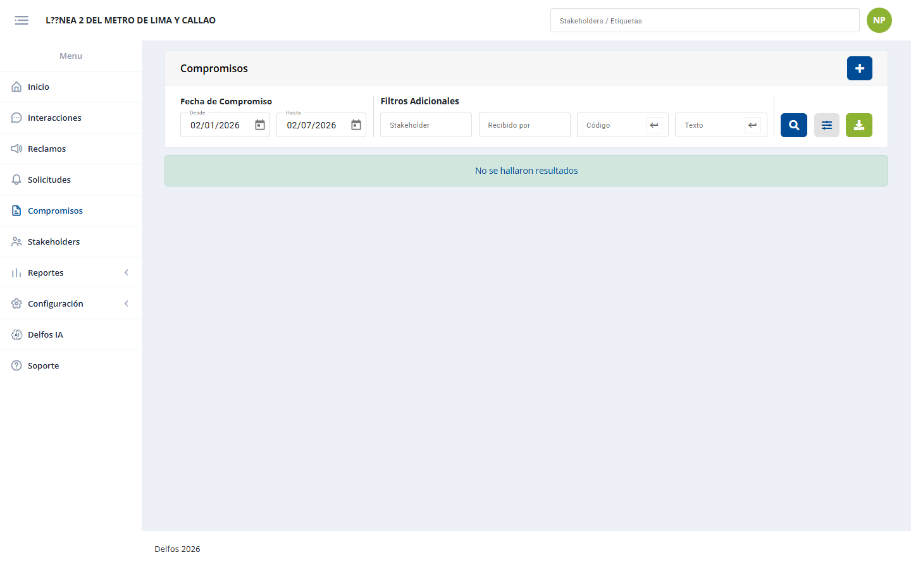
3. Tareas Frecuentes ("Cómo hacer...")
A. Cómo buscar un stakeholder y consultar su historial
- Ve al menú lateral izquierdo y haz clic en Stakeholders.
- Utiliza la barra de búsqueda o los filtros superiores (si aplica) para buscar el nombre.
- Haz clic sobre el registro en la tabla de resultados.
- Se abrirá la Ficha del Stakeholder. Allí, navega entre las pestañas Interacción, Reclamos, o Compromiso para ver toda su historia con el proyecto.
B. Cómo registrar una interacción
- Ve al menú Interacciones.
- Haz clic en el botón superior derecho Nuevo (o el botón con ícono de suma).
- Rellena el formulario indicando con qué stakeholder te contactaste, el tipo de contacto, fecha y descripción.
- Guarda los cambios.
C. Cómo exportar información a Excel
Todos los listados del sistema permiten descargar la información:
- En cualquier módulo (ej. Reclamos), haz clic en el botón Exportar / Descargar (icono de descarga en la parte superior derecha de la tabla).
- Aparecerá un modal con las opciones de descarga.
- Selecciona la pestaña Datos (para la tabla base) o Evidencias (para anexos) según lo que necesites.
- Confirma la descarga. El archivo se generará y se guardará en tu computadora.
D. Cómo cerrar sesión
- En la barra superior, busca tu nombre de usuario o icono de perfil (generalmente arriba a la derecha).
- Haz clic y selecciona Cerrar sesión.
- Serás devuelto a la pantalla de Login y tu sesión de forma segura habrá finalizado.
4. Herramientas del Sistema
Reportes
Encontrarás opciones de reportería analítica (Dashboards) para analizar la información ingresada.
- Reporte de Interacción: Análisis de frecuencias y tipos de contactos.
- Reporte de Reclamo: Tiempos de atención y estados.
- Reporte de Solicitud y Compromiso: Cumplimiento de plazos.
- Reporte de Stakeholder: Estadísticas sobre los grupos de interés.
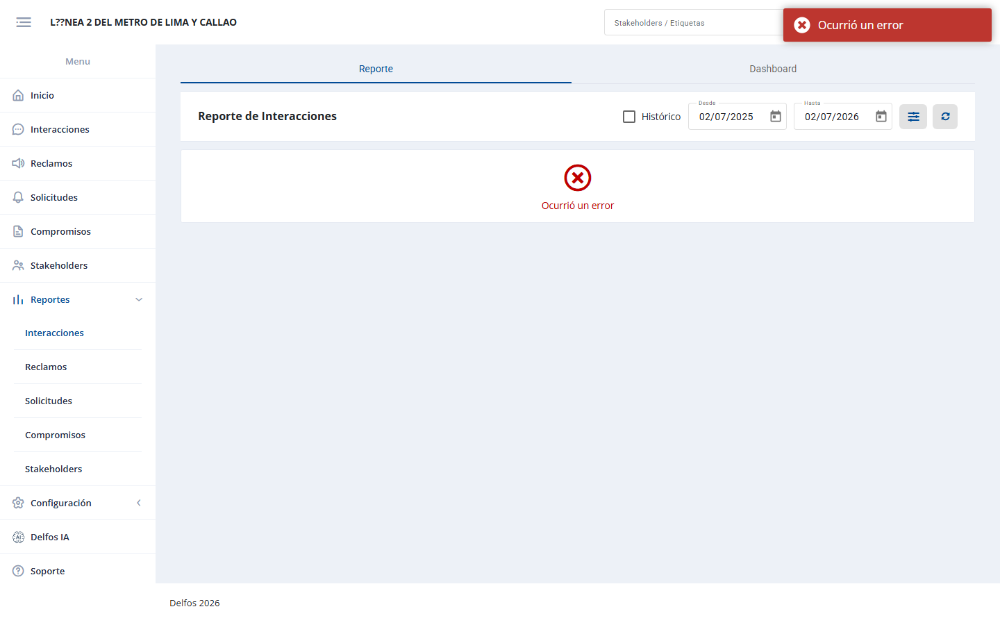
Delfos IA
¿Qué es? Un asistente inteligente integrado.
¿Para qué sirve? Te permite hacer preguntas en lenguaje natural sobre la información del sistema. Puedes buscar documentos o consultar por políticas y procedimientos rápidamente sin tener que navegar por múltiples menús.
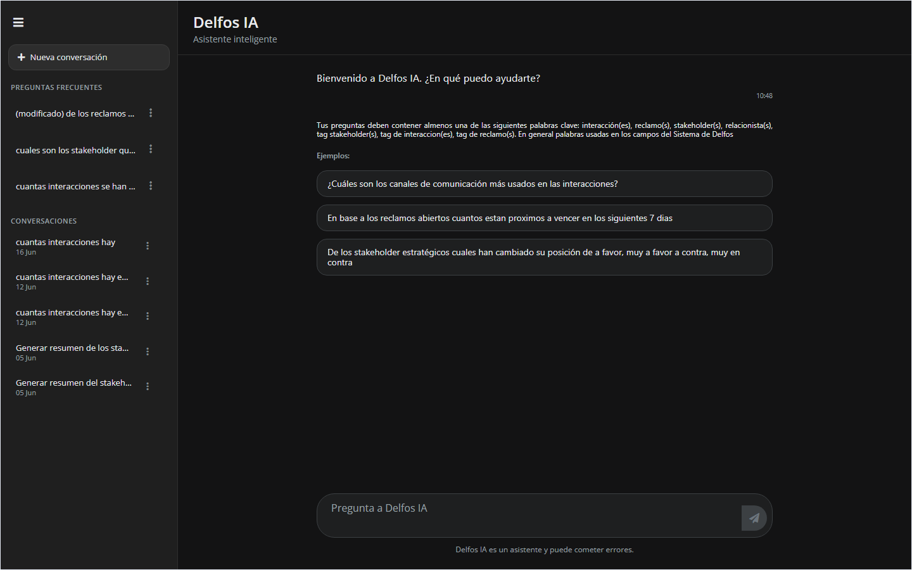
Configuración
(Solo disponible para Administradores)
Aquí se manejan los aspectos técnicos de la plataforma:
- Gestión de Etiquetas (Tags): Crear o eliminar categorías globales.
- Ubigeo: Administrar ubicaciones geográficas.
- Usuarios: Dar de alta a nuevos miembros del equipo o asignar roles.
- General: Parámetros básicos del proyecto activo.
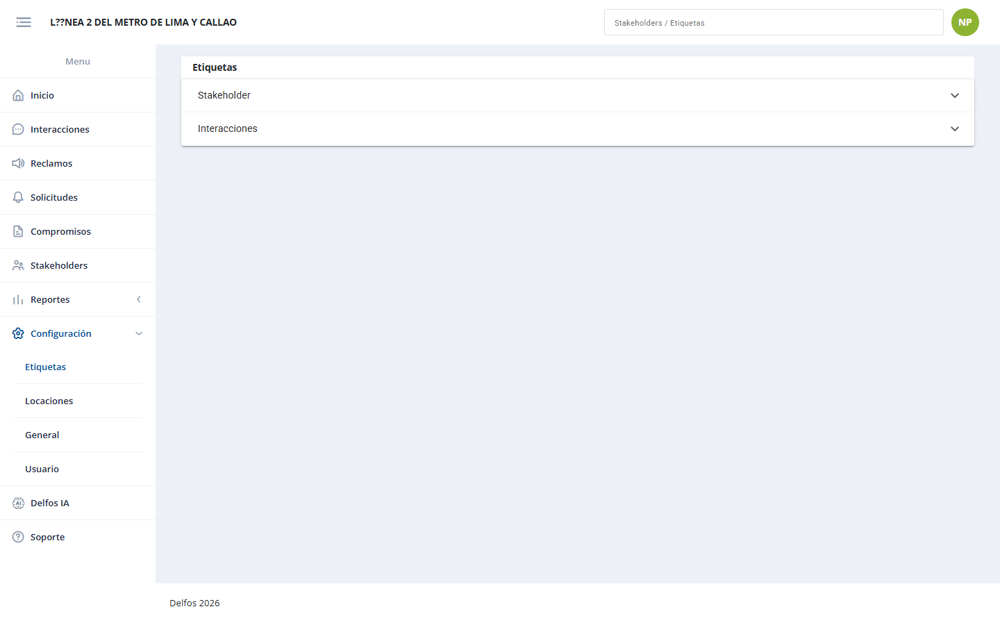
5. Referencia
Roles de Usuario
Delfos cuenta con tres niveles de permisos, cada uno diseñado para las funciones específicas de los miembros del equipo:
- Administrador: Tiene acceso total. Puede ver, crear, editar, eliminar y además acceder al módulo de Configuración para gestionar usuarios y parámetros del sistema.
- Relacionista: Es el usuario operativo principal. Gestiona todos los módulos de día a día (Stakeholders, Interacciones, Reclamos, etc.) y puede ver los Reportes. No tiene acceso a Configuración.
- Consulta: Es un rol de auditoría o supervisión. Solo puede ver la información y generar reportes, pero no puede crear, modificar ni eliminar registros.
Fin del Manual.